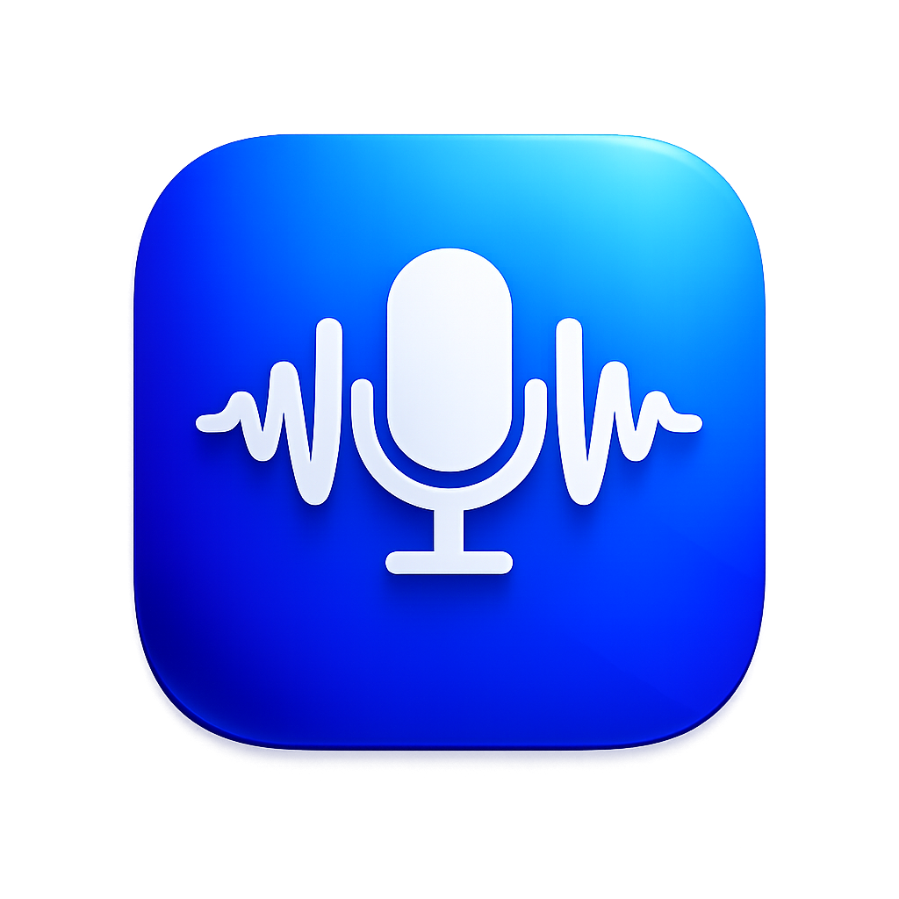

Lanite
Voice Typing
Ctrl
Win
to speak
Ready
0
Total words
lifetime dictated
0
Today's sessions
since midnight
0.0s
Average speed
per transcription
0
Total sessions
all time
History
Models
Settings
Recent dictations
Refresh
Whisper model
Higher accuracy costs speed and memory
tiny.en
Fastest · low memory
Accuracy
60%
~75 MB
tiny.en.pt
small.en
Balanced · recommended
Accuracy
82%
~244 MB
small.en.pt
medium.en
Most accurate · high memory
Accuracy
96%
~769 MB
medium.en.pt
Preferences
Remove fillers
Strip “um” and “uh” from output
Start with Windows
Launch automatically on boot
Trailing space
Append a space after typed text
Language
Transcription detection mode
English
Auto detect
▾
Quit Lanite?
Voice typing will stop until you launch it again.
Cancel
Quit